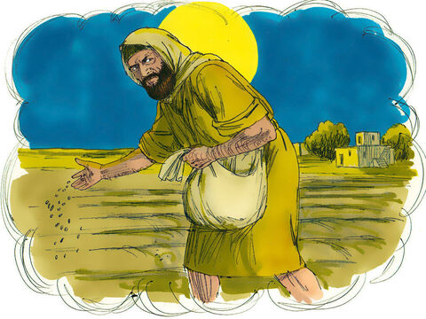
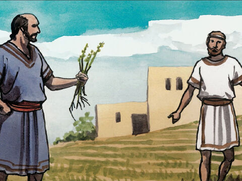
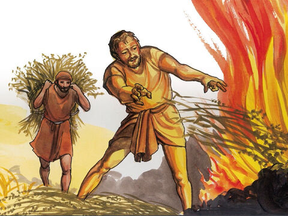

The Parable Of The Weeds
Another parable put he forth unto them, saying, The kingdom of heaven is likened unto a man which sowed good seed in his field:
But while men slept, his enemy came and sowed tares among the wheat, and went his way.
But when the blade was sprung up, and brought forth fruit, then appeared the tares also.
So the servants of the householder came and said unto him, Sir, didst not thou sow good seed in thy field? from whence then hath it tares?
He said unto them, An enemy hath done this. The servants said unto him, Wilt thou then that we go and gather them up?
But he said, Nay; lest while ye gather up the tares, ye root up also the wheat with them.
Let both grow together until the harvest: and in the time of harvest I will say to the reapers, Gather ye together first the tares, and bind them in bundles to burn them: but gather the wheat into my barn.
Matthew 13:24-30
- 
- 
- 

Then Jesus sent the multitude away, and went into the house: and his disciples came unto him, saying, Declare unto us the parable of the tares of the field.
He answered and said unto them, He that soweth the good seed is the Son of man;
The field is the world; the good seed are the children of the kingdom; but the tares are the children of the wicked one;
The enemy that sowed them is the devil; the harvest is the end of the world; and the reapers are the angels.
As therefore the tares are gathered and burned in the fire; so shall it be in the end of this world.
The Son of man shall send forth his angels, and they shall gather out of his kingdom all things that offend, and them which do iniquity;
And shall cast them into a furnace of fire: there shall be wailing and gnashing of teeth.
Then shall the righteous shine forth as the sun in the kingdom of their Father. Who hath ears to hear, let him hear.
Matthew 13:36-43